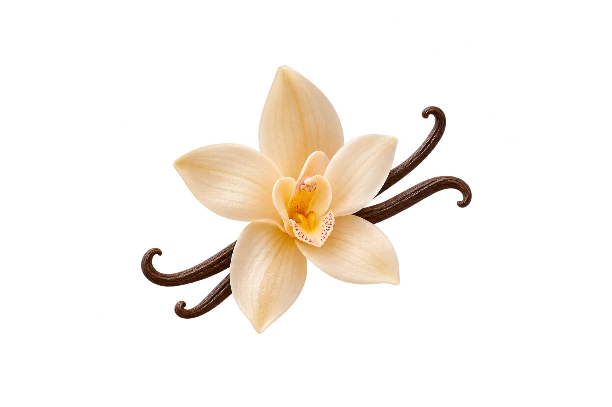

Baunilha StudioLoja demonstrativa
Doce, no
essencial.
Bolos que encantam no olhar e no sabor.
- Avaliação de exemplo
- Bairro de exemplo
- Horário de exemplo

Baunilha StudioConfeitaria contemporâneaBolos que encantam no olhar e no sabor.